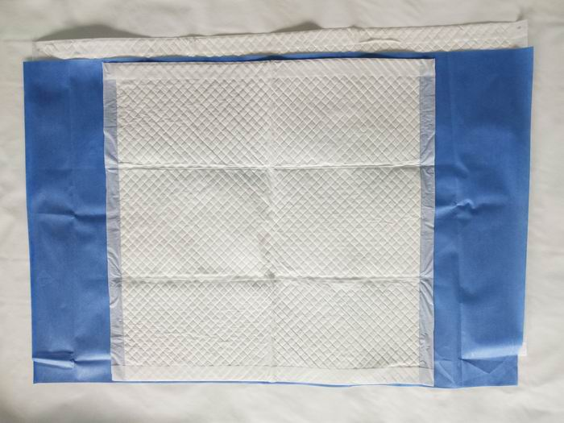
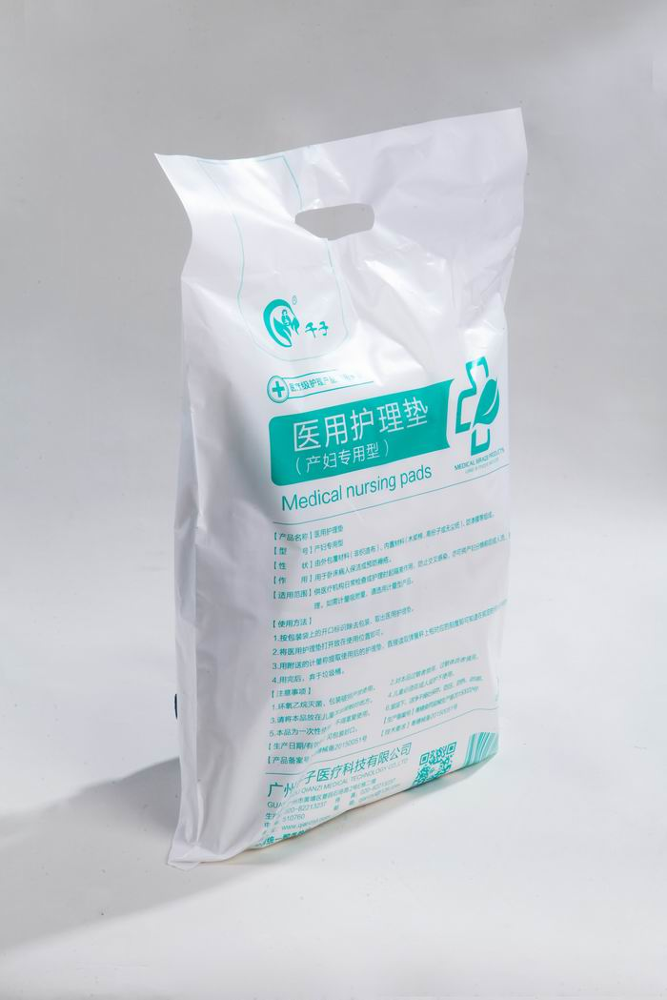
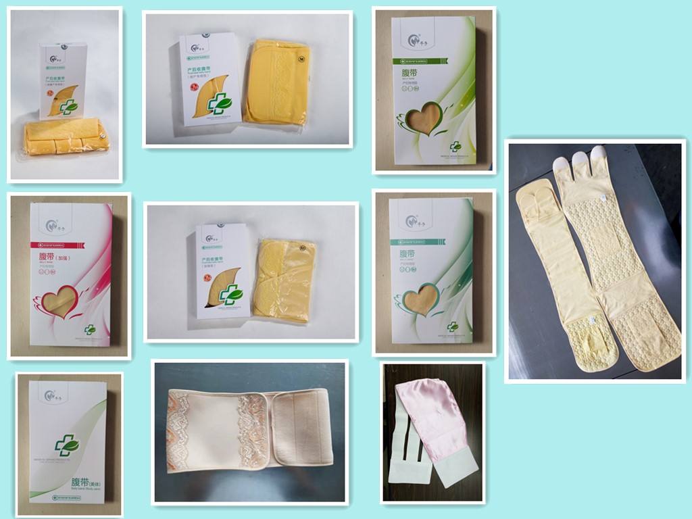
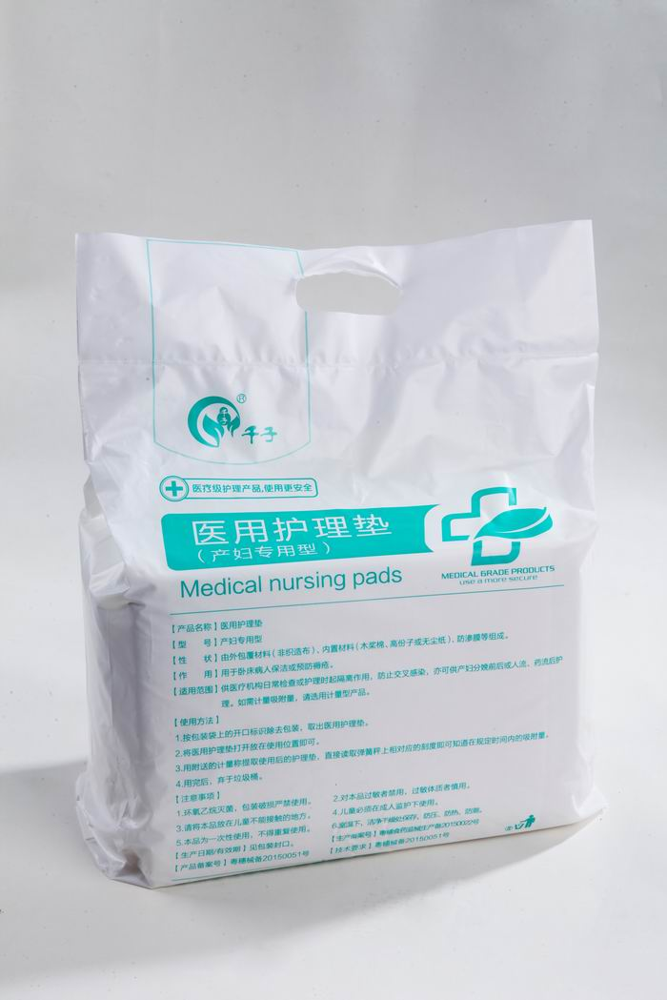
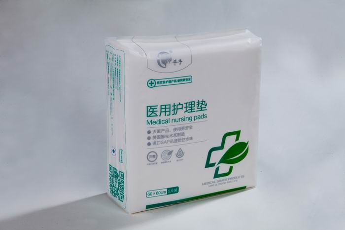
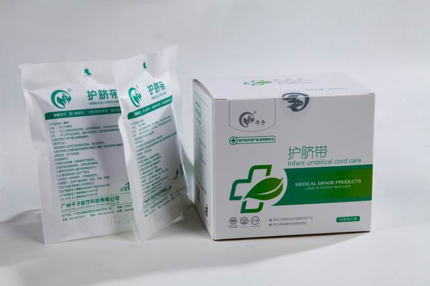
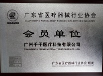

产检/产前护理
孕产妇专用卫生巾、胎监带、入院待产包、护理垫，覆盖入院准备与产前检查。
查看方案


医疗用品与母婴用品两大系列，按原网站产品体系完整整理。
围绕产前、产中、产后与新生儿护理组织内容。
按医院、经销商、月子中心等合作场景优化信息层级。
先补齐基础介绍，后续可继续细化规格、资质与包装。
首页仅展示部分代表产品，完整产品请进入产品展示页查看。
将待产入院常用护理用品组合成套，便于孕产妇提前准备，也方便医院和渠道标准化配置。

用于产程及住院护理过程中的床面防护，帮助减少污染扩散并提升护理操作效率。

用于新生儿脐部护理与防护，帮助减少外部摩擦，适合出生后早期护理场景。

广州千子医疗科技有限公司是一家专注于妇产科医用卫生材料和孕产妇、婴儿卫生护理用品为主，集研发、制造和销售为一体的专业化医疗器械公司。
公司致力于母婴护理领域新项目、新产品的研发、生产、推广工作，引进医用新型材料、新技术、新设备用于功能性产品研发和制造。
了解公司
把企业能力从口号转为可理解的流程表达，强化医疗护理用品的可信度。
围绕妇产科与母婴护理场景识别产品需求。
应用医用新型材料、新技术和新设备开展研发。
形成医疗级母婴护理产品与系列化解决方案。
通过自检、互检、抽检程序保障产品稳定性。
为医院、经销商、月子中心和母婴渠道提供支持。
支持医院、经销商、月子中心、母婴服务机构获取产品目录、报价和合作方案。
提供产程护理、产后护理、新生儿护理相关耗材配套。
完整产品分类与基础介绍，便于渠道进行产品组合销售。
覆盖月子中心、母婴服务和家庭护理的常用护理产品。
参考页面里的 FAQ 交互已保留，利于用户快速理解，也适合后续 SEO 长尾内容扩展。
主要包含医疗用品系列和母婴用品系列，覆盖计量产程垫、入院待产包、医用护理垫、护脐带、收腹带、防溢乳垫等产品。
产品按产前、产中、产后和新生儿护理场景组织，适合医院产科、经销渠道、月子中心和母婴护理机构沟通选型。
可以。当前版本先补齐基础介绍，后续可以继续完善规格参数、材质、包装、资质证照、使用方法和注意事项。